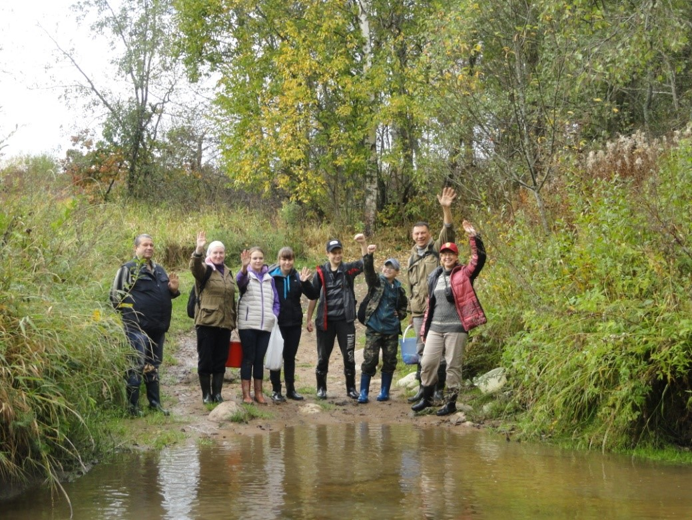

Экспедиции
Поисково-исследовательская экспедиция с профессором СПбГУ, д.б.н. Д.В. Осиповым
Определяемся с маршрутом
6 сентября 2014 года
педагоги и ученики гимназии приняли участие в поисково-исследовательской экспедиции в упразднённую деревню Усть-Рудицу, где располагалась усадьба М.В. Ломоносова и открытая им фабрика по производству цветного стекла и смальты.
Переход речки Рудица
Между двумя могучими дубами располагался вход в усадьбу
Первая находка
Гранитный обелиск на месте фабрики по производству стекла
Часть фундамента усадьбы Ломоносова
Усть-рудицкая спирея на школьном участке
Поисково-исследовательская экспедиция в Усть-Рудицу.
26 сентября 2015 года
Педагоги, ученики 8.2 и 4.2 классов гимназии, а также их родители приняли участие в экспедиции в упразднённую деревню Усть-Рудица, где располагалась усадьба М.В. Ломоносова и открытая им фабрика по производству цветного стекла и смальты.
В этот раз учащиеся опробовали новый способ поиска материала для школьного музея – намывной. Их надежды оправдались, и были найдены небольшие образцы цветных смальт…
… и другие предметы.
Попрощавшись у речки Рудица с заповедными местами ломоносовской усадьбы, экспедиция отправилась на побережье Финского залива в устье реки Коваши.
Здесь, на берегу, участников ждал сюрприз – целые горы цветного глушенного и неглушенного стекла и глиняные фрагменты различных изделий.
Относятся ли они ко временам Ломоносова? Это и предстоит узнать юным исследователям.
Трудовой десант в Усть-Рудице
Трудовой десант в Усть-Рудице
Педагоги, ученики гимназии и их родители приняли участие в трудовом десанте по облагораживанию территории места бывшего расположения фабрика М.В. Ломоносова по производству цветного стекла.